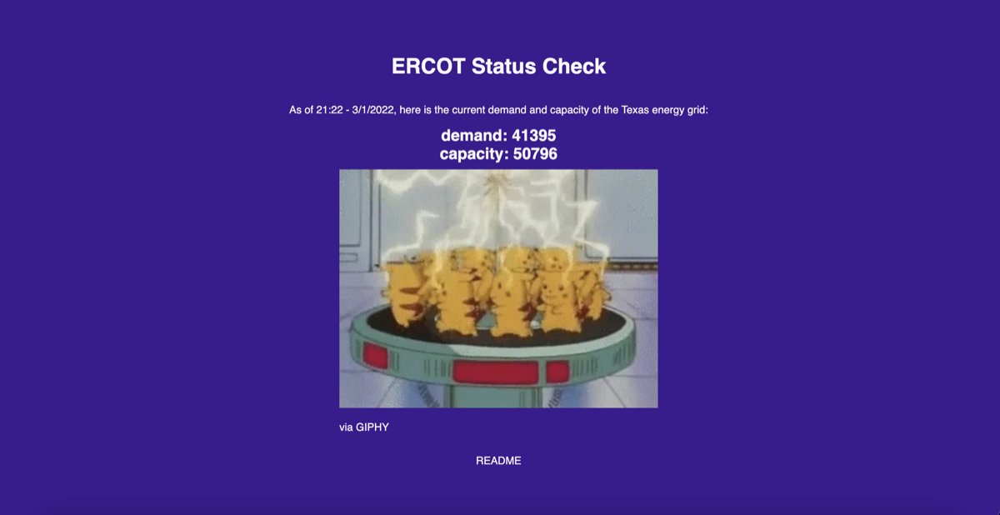
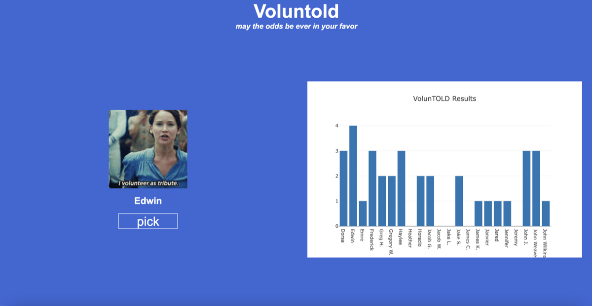

ERCOT Grid Monitor
Built during the 2022 Texas winter storm. Scrapes ERCOT's real-time system conditions page, pulls current demand and capacity, and flags whether the grid can keep up.

> SELECT * FROM projects;
Data engineer and builder. I scrape it, pipe it, chart it, and ship it, usually because I was curious about something.
01 / projects

Built during the 2022 Texas winter storm. Scrapes ERCOT's real-time system conditions page, pulls current demand and capacity, and flags whether the grid can keep up.
A Streamlit app that pulls GameStop's daily price history from Yahoo Finance and charts closing price and volume from the late-2020 run-up to today.

02 / about
I'm Josh. I got into software because I had an idea for a business and couldn't stand letting someone else build it. The business was a highlight of my life, but the bigger takeaway was finding out how much I love writing code.
Since then I've worked at startups and larger companies in increasingly technical roles, mostly in data engineering and support engineering. My favorite problems involve pulling data out of awkward places, cleaning it up, and turning it into something a person can actually act on.
Away from the keyboard you'll find me playing basketball and tennis, cycling, hiking, or deep in a euro board game.
03 / contact
Have a dataset that needs wrangling or a project you want to chat about? Find me here.